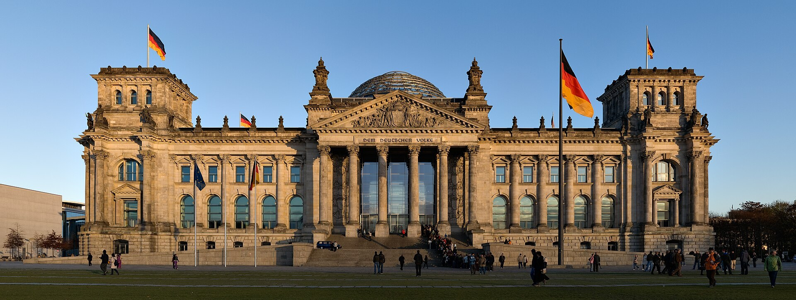

Токаев в Берлине: Украина, Россия и растущий экономический интерес Германии к Казахстану
Президент Касым-Жомарт Токаев встретился с канцлером Фридрихом Мерцем в Берлине 29 сентября, обсудив войну в Украине, энергетику, критические минералы и инвестиции; совокупные немецкие инвестиции в Казахстан превышают $8 млрд.

Президент Казахстана Касым-Жомарт Токаев встретился с канцлером Германии Фридрихом Мерцем в Берлине 29 сентября. Переговоры охватили войну в Украине, отношения с Россией, энергетику, критические минералы, транспортные коридоры и немецкие инвестиции в Казахстан.
Украина и Россия
Токаев призвал сначала заморозить боевые действия в Украине, а затем перейти к дипломатии, подчеркнув при этом тесные связи Казахстана с Россией и заявив, что поддерживает хорошие отношения с президентом России. Канцлер Фридрих Мерц заявил, что Москва пока не проявила готовности к предметным мирным переговорам.
Экономические связи и энергетика
Главной темой стало экономическое сотрудничество. Казахстан — четвёртый по величине поставщик нефти в Германию после Норвегии, США и Ливии. В 2025 году Казахстан поставил 2,146 млн тонн нефти на немецкий завод PCK. Более 80% казахстанского экспорта нефти идёт через Каспийский трубопроводный консорциум (КТК) к Чёрному морю; в августе 2026 года экспорт КТК составил 5,7 млн тонн. Транзит по нефтепроводу «Дружба» был приостановлен в мае 2026 года.
Инвестиции и критические минералы
Совокупные немецкие инвестиции в Казахстан превышают $8 млрд. Сейчас реализуется около 40 совместных проектов (на сумму более $4 млрд), ещё 37 проектов (примерно €1,8 млрд) запланированы. Казахстан поставляет уран, хром и титан для европейской промышленности.
Что бы ни происходило на территории Украины, мы никогда не забываем, что и Россия, и Украина — наши добрые друзья.
— Касым-Жомарт Токаев, президент Казахстана, Берлин, 29 сентября